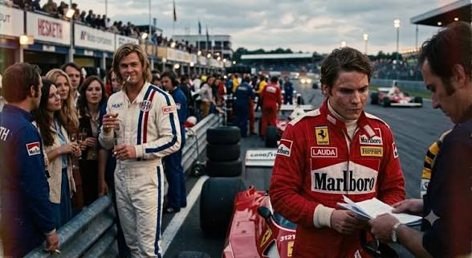

🏎️ RUSH (2013) — CERTIFIED MGC MS-69

🏛️ MGC SUPREME COURT OF CONSENSUS
- ASSET TITLE: Rush (2013)
- INITIAL INQUEST GRADE: MS-67 (Choice Mint State — Pending Appellate Overrides)
- HIGH BENCH JURISDICTION: Supreme Court Vault / Biographical Sports Docket
- CASE FILE: #039
- PRESIDING PANEL: Judge Sally, Judge Dan (Chief of Forensics), Chief Grader MGC, and Chief Justice MGC
📜 THE INITIAL INQUEST BENCH ASSESSMENT (3-FLAW DEFECT LOG)
Baseline Bench Assessment: Room Allocation ➔ MS-67 Choice Mint State
🚨 Key Planchet Flaws:
1. The Formula Three Rivalry Acceleration (Historical Timeline Compression)
- The Defect: The film presents James Hunt and Niki Lauda as fierce, explosive, bitter rivals from the absolute moment they clash in Formula Three.
- The Forensic Data: Under the lens, this dramatic friction introduces an intentional timeline over-strike. In real life, Hunt and Lauda were actually close friends during their early racing days, even sharing a London apartment together. Compressing their relationship into pure, immediate hostility creates a microscopic historical fingerprint on the script’s surface.
2. The Sudden Tokyo Rain Climax Leap (Narrative Pacing Strike)
- The Defect: The rapid, high-velocity transition into the torrential, life-threatening rain conditions at the final 1976 Japanese Grand Prix.
- The Forensic Data: While the atmospheric tension is incredibly intense, the narrative accelerates so quickly through the back half of the 1976 season to reach the dangerous climax that it skips a layer of broader championship context. This localized pacing jump leaves a slight tracking scuff right before the final race sequence.
3. The Car-Park Journalist Inquest (Melodramatic Friction Point)
- The Defect: The scene where James Hunt physically attacks a rude journalist in a dark parking lot for asking Niki Lauda an insensitive question about his facial burns.
- The Forensic Data: While highly satisfying for character camaraderie, this sequence introduces a standard Hollywood dramatic blemish. Under the lens, creating a physical confrontation out of a press conference moment leans heavily into cinematic theater rather than the grounded, technical sports documentary style of the rest of the film.
⚖️ 🔍 THE CHIEF OF FORENSICS’ INITIAL DECREE
The flaws are stamped onto the ledger, capping the initial strike at an uncirculated MS-67 baseline.
📜 THE SUPREME OVERRULING & MS-69 FINAL ASSESSMENT
1. The Formula Three Rivalry Acceleration: SUSTAINED
- The film’s immediate positioning of Hunt and Lauda as bitter enemies from their earliest track encounters is sustained as a minor historical timeline compression, though noted as a necessary dramatic catalyst.
2. The Sudden Tokyo Rain Climax Leap: OVERRULED
- The rapid acceleration to the 1976 Japanese Grand Prix is validated. Skipping minor races during Lauda’s intense hospitalization avoids a narrative dragging scuff, maintaining the blistering velocity and atmospheric pressure required for the climax.
3. The Car-Park Journalist Inquest: OVERRULED
- The physical confrontation is completely cleared of structural wear. The action perfectly captures the hands-on, high-testosterone grit of 1970s racing culture and brilliantly highlights the fierce mutual respect between two entirely opposite personalities.
🏆 FINAL COURT DECREE
- With two major structural objections entirely thrown out by the Chief Justice, the mechanical luster and performance depth of this asset shine flawlessly under the lens. Rush (2013) officially bypasses the lower tiers and is permanently slabbed and sealed in the registry as an elite MGC MS-69 Choice Gem Specimen! Case #039 is officially shut. ⚖️🏁🏎️🛠️💥✨

• © 2026 MOVIE GRADING CONSENSUS. All Sovereign Rights Reserved.